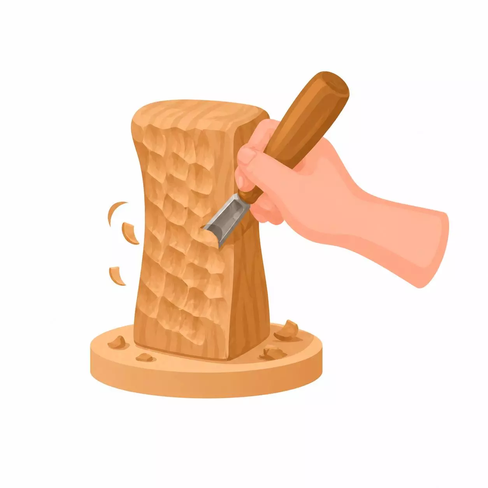

أساسيات نحت الخشب

حرفة فنية قديمة تعتمد على تشكيل الخشب باستخدام أدوات حادة لإزالة أجزاء منه، وتحويله إلى منحوتات مجسمة، أو نقوش بارزة وغائرة
الأدوات
سكين نحت الخشب
مجموعة من الأزاميل
ورق صنفرة للتنعيم
نصائح
ابدأ بأخشاب طرية وسهلة النحت
ارتد قفازات واقية لحماية يديك
حافظ على حدة أدواتك
مميزات
تحويل القطع الخشبية العادية إلى تحف فنية ذات طابع ثقافي، تاريخي، أو تقليدي
استغلال جذوع الأشجار والأخشاب القديمة المهملة في إنشاء قطع فنية
فن إبداعي يجمع بين دفء الطبيعة وجمال التفاصيل الدقيقة
المقدمة
رقم الكورس
هدف الكورس
رابط الكورس
الثاني
تعلم نحت الزخارف الهندسية
الثالث
الفرق بين الحفر الموجب و السالب
الرابع
الجمع بين الزخارف و الحفر